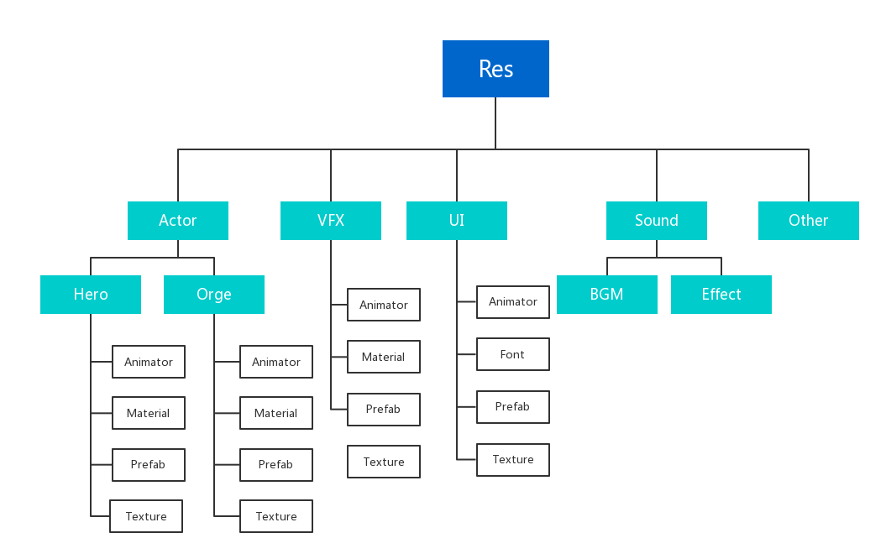
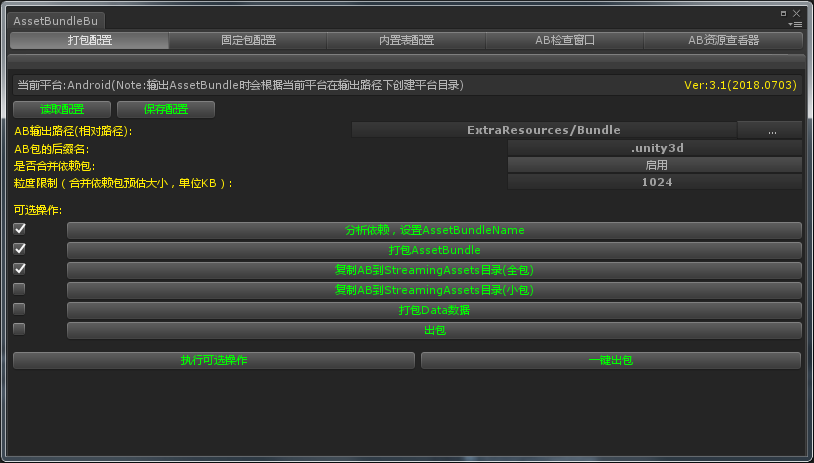
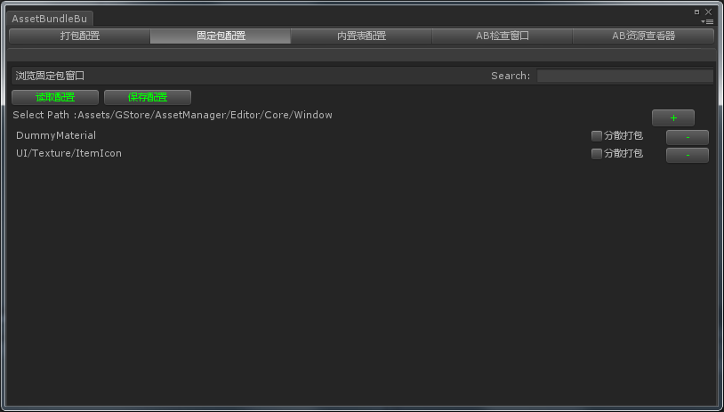
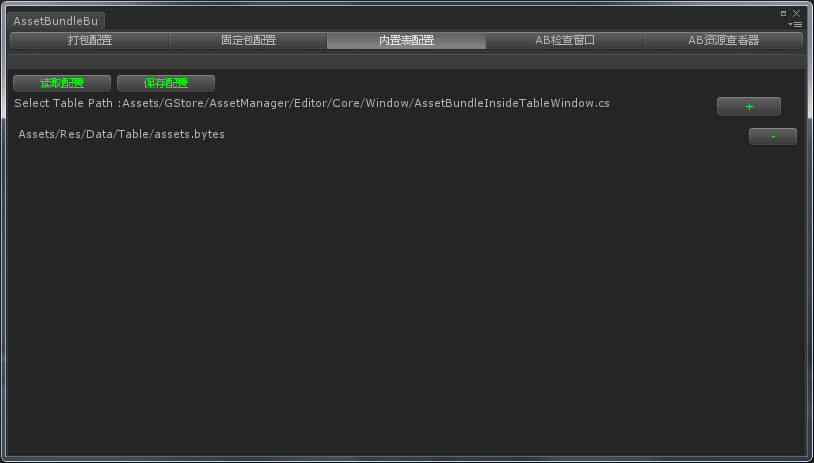
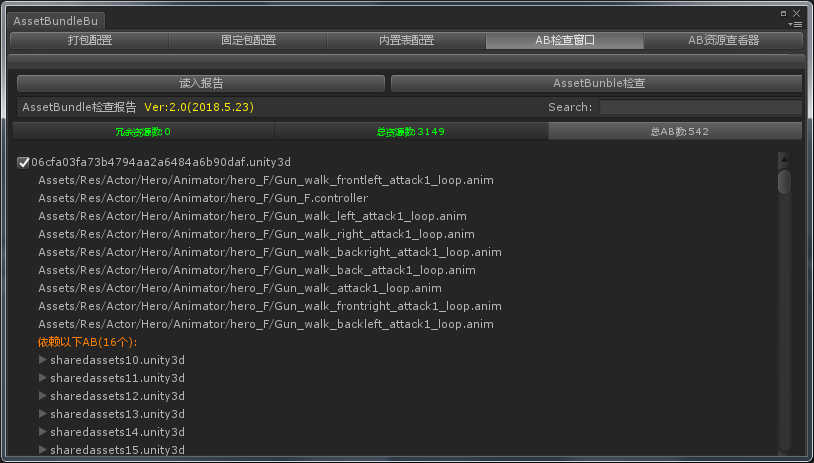
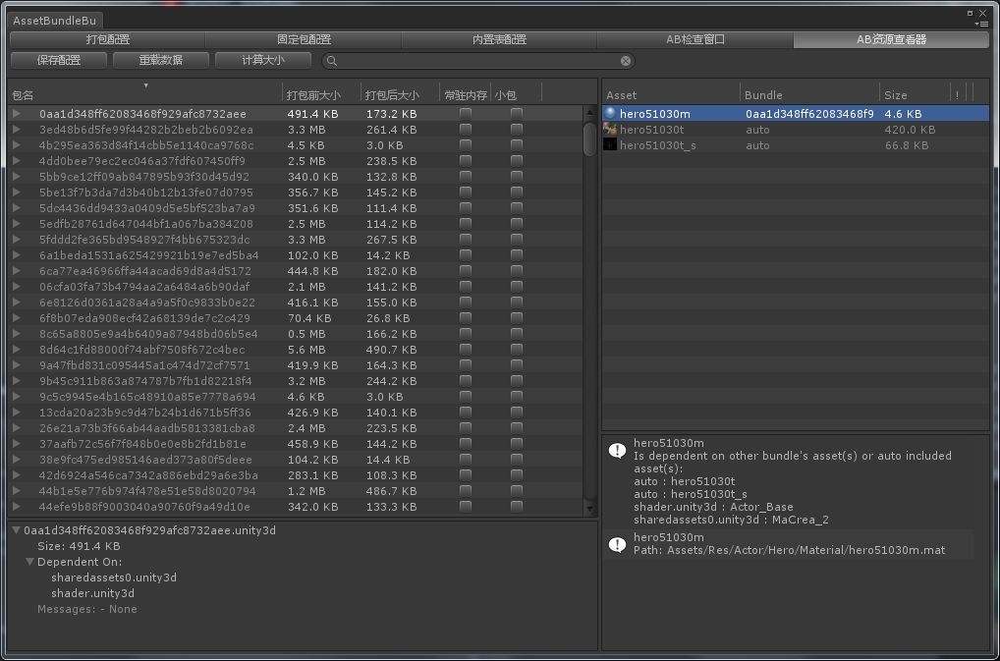
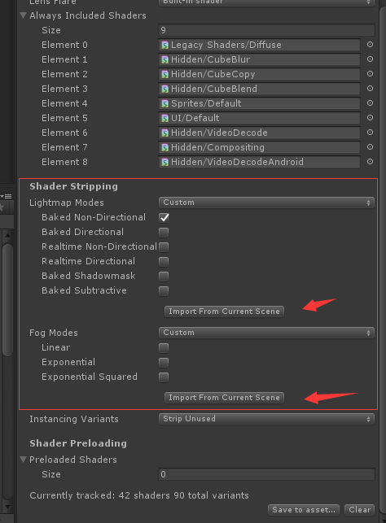

逻辑分类可以有多级，比如角色下面可以继续分出英雄类和怪物类。
如果最后一级逻辑分类只有一种类型的资源文件，可以省略类型分类。
Unity引擎主要有两个用于打包资源的目录
Resources模式虽然使用简单，但是存在着无法热更、无法增量打包、资源过多时增加游戏启动时长等缺点。而StreamingAssets目录需要配合AssetBundle使用获取通过File接口读取解析资源，并且由于StreamingAssets目录对资源不做任何处理，放入其中的资源必须是经过压缩的，否则会有很大的包体占用。
由于Resources目录除了使用方便以外有诸多缺点，不适应后期发布阶段的需求，为了避免发布时再切换资源目录的操作，我们从一开始就要将所有资源使用StreamingAssets目录打包。
游戏中不同的资源类型，我们采用不同的方式打包到最终的游戏包中。
游戏的主要资源，如模型、贴图、材质、prefab、shader等，这类必须通过Unity资源接口加载的资源全部打包成AssetBundle，存放在StreamingAssets目录中。
游戏的配置文件，如数据表、AI数据、各种编辑器产生的配置数据，这类数据集中打包成Data.zip，存放在StreamingAssets目录，运行时解压到持久化目录，再通过File接口读取二进制自行解析。这样做能够集中管理数据文件，便于加密和热更，而且压缩率要比打包成AssetBundle高。
Lua文件由于不需要编译，所以可以和数据文件采用同样的打包方式。
视频文件通常用于游戏的开场动画，由于视频文件通常都是已压缩的格式，Unity也支持直接读取视频文件而不必通过AssetBundle，所以视频文件直接放在StreamingAssets目录即可。
如果项目使用Unity内置的音频播放系统，那么音频文件可以导入成Unity资源，使用AssetBundle的方式打包；如果项目使用类似Wwise的音频引擎，那么可以将该引擎导出的音频数据直接存放在StreamingAssets中。
资源管理器包含编辑器和运行时两部分的内容。GStore/AssetManager中存放着该模块的代码，项目组不需要改动这部分代码。而GStore-Custom/AssetManager中则存放该模块的一些配置代码，接入模块时需要修改这部分代码。
编辑器部分：
AssetBundleBuilderInitializer.cs
运行时部分：
AssetManagerSetup.cs
对接代码主要是资源表的对接，编辑器部分对接完即可运行。而运行时代码还需在游戏初始化时调用AssetManagerSetup.Setup()和AssetManager.Instance.Init()。
通过点击Unity界面上的菜单GStore -> Build -> AssetBundleBuilder，可以打开打包编辑器。

这个界面主要有两个用途，一是对打包策略进行一些配置：
第二个用途是在此界面进行一些打包操作，可以单步执行也可以一键出包，方便本地打包测试，接入云构建时，云构建会调用一键出包接口完成出包。

固定包配置可以将资源目录下的一些目录添加到打包策略中，主要有以下几个作用：
注意：DummyMaterial目录是打包策略用于Shader变体丢失的处理的目录，固定包配置中至少要保留这个目录。

由于前面我们将所有的数据文件压缩到StreamingAssets存放，那么游戏运行时需要先解压才能开始读取数据表，但是实际上很可能游戏在解压数据前就需要访问数据表了，所以这部分数据表需要特殊处理一下，最终采用的方案是，需要提前读取的数据文件，通过在此界面配置，打包时会复制到Resources目录，确保即使数据未解压也仍有内置的数据可读，由于加载策略中，Resources的优先级最低，所以当数据解压后或者热更后，游戏就不会读取到内置数据了。

这个界面用于分析打包后的AssetBundle的资源分布和依赖情况，主要用于排查AssetBundle中是否有资源冗余打包的情况。
使用步骤：
我们通过依赖分析进行打包的策略避免了因为assetBundleName设置不当导致项目资源被冗余打包的问题。但是，仍有一些情况是打包策略解决不了的冗余情况:
由于内置资源无法通过设置assetBundleName来独立打包，那么当内置资源有多处引用时，就会被重复打入多个AssetBundle中，造成冗余。
解决方法：
在实际使用中发现，当一些贴图同时作为Sprite和Texture被其它资源引用时，贴图本身设置了assetBundleName，打包AssetBundle后发现，引用Sprite的资源能正确处理依赖关系没有冗余，而引用Texture的资源包都冗余了一张目标贴图。
目前认为这是Unity打包的一个bug，assetBundleName的设置仅应用在Sprite上而没有应用Texture在对象上。
解决方法：
目前回避这个问题的方法是一张图设置成Sprite就不要再用作Texture，实在需要，则复制一张图仅做Texture使用。

这个界面直接集成了Unity官方开源的AssetBundles-Browser，相比AssetBundle检查窗口，这个可以在打包前浏览各个AssetBundle的资源，更加方便，不过排查冗余资源的功能，还是AssetBundle检查器通过分析打包后的AssetBundle更加准确。
我们在官方版本上还做了一些扩展，加上标识“常驻内存”和“小包”的功能，标注了常驻内存的AssetBundle，在游戏过程中即使切场景也不会卸载，通常用于shader和字体的AssetBundle。而标注小包则用于小包模式。
一方面，对于移动平台来说，有些渠道对游戏的包体大小有限制，一般来说，首包越小的游戏在推广上更有优势。另一方面，随着手游产品越来越重度和追求高品质，包体随之越来越大。为了处理这种矛盾，打包管理器支持小包模式。
小包模式指的时候打包的时候只包含最低限度能运行游戏的资源，其它资源进入游戏后再通过网络下载或者按需下载，从而降低首包大小和兼顾游戏品质。
小包模式的配置：
如果打包AssetBundle后，发现有材质显示异常，通常是因为Shader的变体被剥离了。解决办法是新建一个包含所需变体的材质或者ShaderVariantsCollection，放置到Assets/Res/DummyMaterial目录，打包工具会自动处理Shader变体的生成。
这里推荐使用ShaderVariantsCollection，通过Unity编辑器运行游戏一段时间，即可收集到绝大部分需要使用到的变体。
Unity默认按照BuildSetting和各级Resources目录中用到的资源来自动剥离没有使用到的代码和shader，而使用AssetBundle模式时，Unity无法确定这些资源是否会用到，按照上面的规则会认为没有用到，从而错误的剥离掉一些信息。
如果打包AssetBundle后，发现场景灯光显示异常，则很可能是烘培信息被剥离了，解决方法如下：
打开一个烘培过的场景
打开GraphicSettings：
点击Import From Current Scene。会根据当前场景的烘培设置勾选可以剥离的信息。
提交GraphicSettings的修改。

运行时统一通过GStore.AssetManager.AssetManager提供的接口加载资源。
接口：
public void Init()
游戏初始化时调用一次。
接口：
public void DoStartScene()
场景开始时调用。
接口：
public void DoExitScene()
场景退出时调用。
接口：
public T LoadAsset<T>(int assetId) where T : Object
示例：
AudioClip clip = AssetManager.Instance.LoadAsset<AudioClip>(assetId);
接口：
public void LoadAssetAsync(int assetId, ObjectCallback callBack, IsObjectOldFunc func)
示例：
AssetManager.Instance.LoadAssetAsync(assetId, delegate (Object obj, bool isOld)
{
if (isOld == false && gameObject != null)
{
GameObject effectPrefab = obj as GameObject;
if (effectPrefab == null)
return;
GameObject effectObject = AssetManager.Instance.Instantiate(effectPrefab);
mEffect3 = effectObject;
ShowHitEffect(iActive);
}
}, CheckSceneName);
接口：
public Sprite LoadSprite(int assetId, string spriteName = "")
示例：
Sprite sprite = AssetManager.Instance.LoadSprite(assetId, name);
接口：
public byte[] LoadFileData(string originName)
示例：
bytes = GStore.AssetManager.AssetManager.Instance.LoadFileData(resourcePath);
接口：
public GameObject Instantiate(GameObject prefab, Vector3 position, Quaternion rotation, bool getFromPool = true)
示例：
GameObject cloneUIObj = AssetManager.Instance.Instantiate(uiObj);
接口：
public GameObject LoadAssetAndInstantiate(int assetId, bool getFromPool = true)
接口：
public void LoadAssetAsyncAndInstantiate(int assetId, GameObjectCallback callBack, IsObjectOldFunc func, bool getFromPool = true)
接口：
public void CacheObject(int assetId, int cacheNum = 1)
接口：
public void RecycleGameObject(GameObject go)